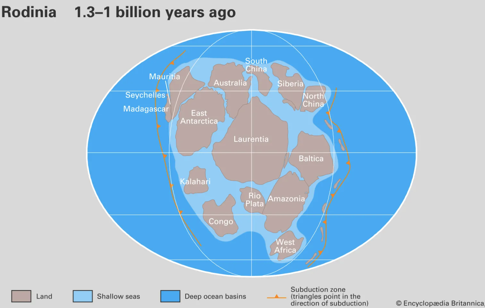

Yunanca "erken yaşam" anlamına gelen Proterozoyik, Kambriyen öncesi süper zamanın en genç ve en uzun evresidir. Bu dönem, yeryüzünün jeolojik ve biyolojik yapısında radikal değişimlerin yaşandığı, devasa buzul çağlarından süper kıtaların oluşumuna kadar gezegenin çehresini değiştiren olaylara ev sahipliği yapmıştır.
İklim, Coğrafya ve Canlılığın Evrimi
• Kartopu Dünya ve İklim: Bu devirde yeryüzü, birkaç kilometre kalınlığında buz tabakalarıyla kaplandığı şiddetli buzul çağları yaşamıştır. Kartopu Dünya olarak tanımlanan bu süreç, devrin sonuna doğru iklimin ılımanlaşmasıyla sona ermiştir.
• Rodinia Süper Kıtası: Coğrafi olarak bugünkü kıtalar Güney Yarım Küre'de birleşerek Rodinia adı verilen devasa bir anakarayı oluşturmuştur.
• Oksijen Felaketi ve Bakteriler: Atmosferde artan serbest oksijen, Arkeen'den gelen çekirdeksiz tek hücreli canlılar için bir felakete yol açarken, oksijene uyum sağlayan bakterilerin hızla çoğalmasına zemin hazırlamıştır.
• Ediakara Faunası: Yaklaşık 2,2 milyar yıl önce ilk çekirdekli tek hücreliler, devrin sonlarına doğru ise denizanası ve süngerlere benzeyen ilk yumuşak dokulu çok hücreli canlılar ortaya çıkmıştır.
• Ultraviyole Kuşatması: Henüz ozon tabakası oluşmadığından, yaşam bu dönemde yalnızca okyanusların koruyucu derinliklerinde sürdürülebilmiştir.

Yaklaşık 1 milyar yıl önce tüm kara kütlelerinin birleşmesiyle oluşan Rodinia süper kıtasının harita rekonstrüksiyonu.